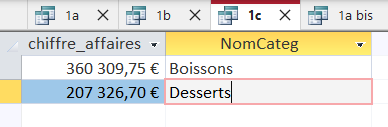
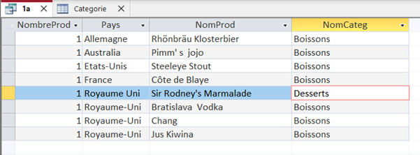
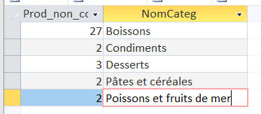
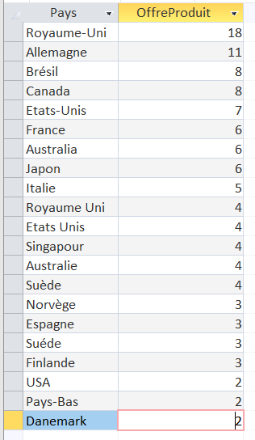
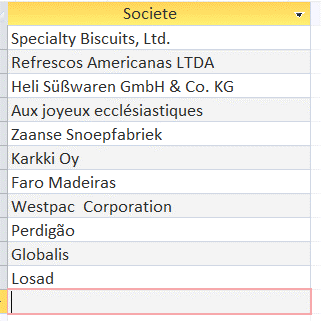
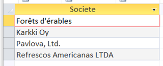
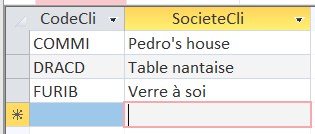
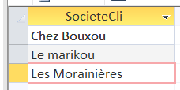
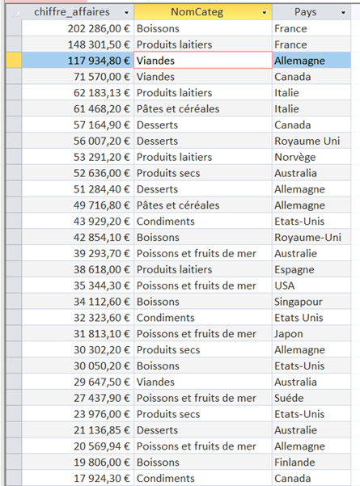
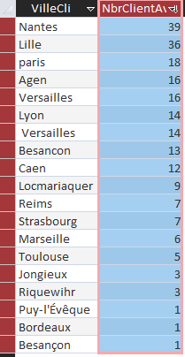

Nous de analyser la base de donnée fournit par KDou,nous avons crée depuis Microsoft Access des requêtes SQL pour
analyser plus rapidement et crée des indicateurs pour simplifier les données.
Questions:
1
Le premier indicateur choisi est le chiffre d'affaire des dessert et boisson séparer:Cette indicateur est le
plus utile car nous pouvons estimer les produits qui génére le plus (%) du chiffre d'affaire total.
CODE SQL:
SELECT SUM(dc.PrixUnitCli * dc.QteCom ) AS chiffre_affaires, NomCateg
FROM DetailCommande AS dc INNER JOIN (Produit AS p INNER JOIN Categorie AS c ON c.CodeCateg = p.CodeCateg) ON p.RefProd = dc.RefProd
WHERE c.CodeCateg In (1,3)
GROUP BY NomCateg;

Le pays de provenance des produits permet d'identifier les fournisseurs qui propose le plus de produit
CODE SQL:
SELECT DISTINCT Pays, NomCateg
FROM Fournisseur LEFT JOIN (Produit LEFT JOIN Categorie ON Categorie.CodeCateg=Produit.CodeCateg) ON Fournisseur.NoFour=Produit.NoFour
WHERE NomCateg LIKE "Boissons" OR NomCateg LIKE "Desserts";

2
Cette indicateur permet de connaître qu'elle type de produit ne vende pas pour enlever sans que ça touche la
compagnie ou le fournisseur
CODE SQL:
SELECT COUNT(*) AS Prod_non_commandé, NomCateg
FROM Categorie AS c INNER JOIN Produit AS p ON p.CodeCateg = c.CodeCateg
WHERE NOT EXISTS (
SELECT dc.RefProd
FROM DetailCommande AS dc
WHERE dc.RefProd = p.RefProd )
GROUP BY NomCateg;

Celle-ci permet de connaître les pays qui offre le plus de produits car en connaissant nous pouvons estimer le
nombre totale de commande.
CODE SQL:
SELECT Pays, COUNT(*) AS OffreProduit
FROM Fournisseur AS f INNER JOIN Produit AS p ON p.NoFour = f.NoFour
GROUP BY Pays ORDER BY COUNT(*) DESC;

Nous avons en prenant compte des notations différents des pays que le Royaume-Unis qui est premier avec 22, les
Etats-Unis avec 13, l’Allemagne avec 11 et puis juste derrière l'Australie avec 10
3
Celui là affiche seulement les fournisseur qui vend dessert ou boisson car en connaissant on peut analyser
si en
offrant seulement ces types de produit on ne perd pas de chiffre d'affaire.
CODE SQL:
SELECT Societe
FROM Fournisseur
WHERE NoFour NOT IN ( SELECT NoFour FROM Produit WHERE CodeCateg NOT IN (1,3) )
AND NoFour IN (
SELECT NoFour
FROM Produit
WHERE CodeCateg IN (1,3) ); );

En prenant compte de celui-d'en haut on peut deviner si leurs revenue est plus grand comparer a vendre seulement
un type.
CODE SQL:
SELECT DISTINCT Fournisseur.Societe
FROM Fournisseur INNER JOIN (Categorie INNER JOIN Produit ON Categorie.CodeCateg = Produit.CodeCateg) ON Fournisseur.NoFour = Produit.NoFour
WHERE (((Fournisseur.NoFour) In (
SELECT NoFour
FROM Produit
WHERE CodeCateg LIKE 1 ) And (Fournisseur.NoFour) In (
SELECT NoFour
FROM Produit
WHERE CodeCateg LIKE 3 )));

4
Nous regroupons les clients commandent de l'allemagne venant de Nante car en connaissant le nombre de client
par ville on peut focaliser
plus dessus.
CODE SQL:
SELECT c.CodeCli, c.SocieteCli
FROM Client AS c
WHERE c.VilleCli LIKE "Nantes" AND c.CodeCli IN (
SELECT cd.CodeCli
FROM Commande AS cd, Produit AS p, Fournisseur AS f
WHERE c.CodeCli = cd.CodeCli AND f.NoFour = p.NoFour AND pays LIKE "Allemagne" )

Celle-ci permet de voir les produits qui ont jamais eu une remise 25%, cette indicateur est pertinent car en
analysant le type de produit le founisseur poura soit ajouter soit enlever pour avoir plus de commande ou sinon
les tendances des clients.
CODE SQL:
SELECT DISTINCT P.RefProd
FROM Produit AS P LEFT JOIN DetailCommande AS DC ON P.RefProd = DC.RefProd
WHERE P.RefProd NOT IN (
SELECT DISTINCT P2.RefProd
FROM Produit P2 LEFT JOIN DetailCommande AS DC2 ON P2.RefProd = DC2.RefProd
WHERE DC2.Remise=0.25 );

Nous avons au total 43 produit
NOS INDICATEURS PERSONELLES
Nguyen:
L’objectif de la requête est d’optimiser l’offre en trouvant le pays des fournisseurs qui dominent dans chaque catégorie
et en même temps, la catégorie qui apporte le plus de bénéfice.
Elle est intéréssante car en connaissant cela, investir plus en eux serait le meilleur à faire pour optimiser les gains.
SELECT SUM(dc.PrixUnitCli * dc.QteCom) AS chiffre_affaires, NomCateg, Pays
FROM DetailCommande AS dc INNER JOIN (Produit AS p INNER JOIN Categorie AS c ON c.CodeCateg = p.CodeCateg) ON p.RefProd = dc.RefProd, Fournisseur AS f
WHERE f.NoFour = p.NoFour
GROUP BY NomCateg, Pays
ORDER BY SUM(dc.PrixUnitCli * dc.QteCom ) DESC;

Classement :
Boissons : France
Produit laitiers : France
Viandes : Allemagne
Pates ceréales : Italie
Désserts : Canada
Produits secs: Australie
Condiments : Etats Unis
Poissons et fruits de mer : Australie
Calcul du chiffre d'affaires grâce à la somme du prix par unité acheté par les clients multiplié par sa quantité acheté.
J’ai relié toutes les tables dont j’avais besoin entre elles et j’ai regroupé le résultat par catégorie et pays en les
triant du plus grand au plus petit car ce sont les grandes sommes qui nous intéressent.
Lyna:
Objectif : Trouver le nombre de client par ville ayant déjà eu une remise de 25%
Cela peut permettre à Kdou de trouver la ville la plus profitable s'il souhaite s'installer avec une entreprise
physique.
SELECT Cli.VilleCli,COUNT(Cli.CodeCli) AS NbrClientAvecRemise
FROM Client AS Cli, Commande AS Com, DetailCommande AS DetCom
WHERE Cli.CodeCli = Com.CodeCli AND Com.NoCom = DetCom.NoCom AND DetCom.Remise = 0.25
GROUP BY Cli.VilleCli;

Satyam:
Cette requête est pertinent pour la compagnie KDou. Puisqu’elle mesure la quantité et la fréquence des achats du
clients.
Voici le code SQL: En prenant le societe avec les nombre de produit commander nous pouvons personaliser leurs services
et les fidéliser avec un programme de loyauté.
SELECT CL.SocieteCli,COUNT(DC.RefProd) AS Com_Freq
FROM Client CL,Commande C,DetailCommande DC, Produit P
WHERE C.CodeCli=CL.CodeCli AND DC.NoCom=C.NoCom AND DC.RefProd=P.RefProd
GROUP BY CL.SocieteCli ;